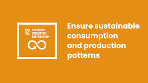

Responsible Consumption and Production
Goal 12 is about ensuring sustainable consumption and production patterns, which is key to sustain the livelihoods of current and future generations. Our planet is running out of resources, but populations are continuing to grow. If the global population reaches 9.8 billion by 2050, the equivalent of almost three planets will be required to provide the natural resources needed to sustain current lifestyles. As of 2024, 530 policies related to sustainable consumption and production were submitted across 71 countries, a 6 per cent increase from 2023. We need to change our consumption habits, and shifting our energy supplies to more sustainable ones is one of the main changes we must make if we are going to reduce our consumption levels. Global fossil fuel subsidies fell by 34.5 per cent in 2023 – from a record high of $1.68 trillion in 2022 to an estimated $1.10 trillion. Despite the drop, fossil fuel subsidies remain nearly three times 2020 levels and well above historical averages. Fossil fuel subsidies are widely recognized as inefficient, distorting prices and consumption while diverting public funds from sustainable development. We are seeing promising changes in industries, including the trend towards sustainability reporting being on the rise, almost tripling the amount of published sustainability over just a few years, showing increased levels of commitment and awareness that sustainability should be at the core of business practices. Food waste is another sign of over consumption, and tackling food loss is urgent and requires dedicated policies, informed by data, as well as investments in technologies, infrastructure, education and monitoring. A staggering 931 million tons of food is wasted a year, despite a huge number of the global population going hungry. Why do we need to change the way we consume? Economic and social progress over the last century has been accompanied by environmental degradation that is endangering the very systems on which our future development and very survival depend. A successful transition will mean improvements in resource efficiency, consideration of the entire life cycle of economic activities, and active engagement in multilateral environmental agreements. What needs to change? There are many aspects of consumption that with simple changes can have a big impact on society as a whole. Governments need to implement and enforce policies and regulations that include measures such as setting targets for reducing waste generation, promoting circular economy practices, and supporting sustainable procurement policies Transitioning to a circular economy involves designing products for longevity, repairability, and recyclability. It also involves promoting practices such as reusing, refurbishing, and recycling products to minimize waste and resource depletion. Individuals can also adopt more sustainable lifestyles – this can involve consuming less, choosing products with lower environmental impacts, and reducing the carbon footprint of day-to-day activities. How can I help as a business? It’s in businesses’ interest to find new solutions that enable sustainable consumption and production patterns. A better understanding of environmental and social impacts of products and services is needed, both of product life cycles and how these are affected by use within lifestyles. Innovation and design solutions can both enable and inspire individuals to lead more sustainable lifestyles, reducing impacts and improving well-being. How can I help as a consumer? There are two main ways to help: Reducing your waste and Being thoughtful about what you buy and choosing a sustainable option whenever possible. Ensure you don’t throw away food, and reduce your consumption of plastic—one of the main pollutants of the ocean. Carrying a reusable bag, refusing to use plastic straws, and recycling plastic bottles are good ways to do your part every day. Making informed purchases also helps. By buying from sustainable and local sources you can make a difference as well as exercising pressure on businesses to adopt sustainable practices.